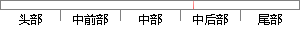

至此，交叉编译链就配置好了，可以使用命令让修改的环境变量立即生效：
片段位置图

相似结果
相似片段：42 5.1交叉编译环境的搭建???一42 5.2 U.boot...ATT7022A提供特殊命令及使用方法如表4.3 所示。表...环境变量配置好了,查看下arm—linux.gcc的版本信息,...
| 标题 | 《基于ARM和Linux的远程负荷管理终端设计》 |
| 对比库 | 中国学位论文全文数据库 |
| 作者 | 王振坤 |
| 机构 | 湖南大学 |
| 分类 | 仪器科学与技术 |
| 年份 | 2011 |
| 相似率 | 61.54% （轻度抄袭） |
※ 片段修改建议 ※
近似词参考：- 命令：号令 饬令 敕令 下令
- 使用：利用
- 立即：当即 立刻
- 好了：高声
- 配置：设置装备摆设
- 生效：见效
- 修改：点窜
- 交叉：交织
系统自动生成语句： 至此，交织编译链就设置装备摆设高声，可以利用号令让点窜的环境变量当即见效：
注：本片段修改建议为系统自动生成，仅供参考。